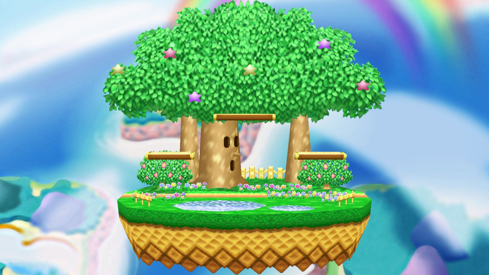
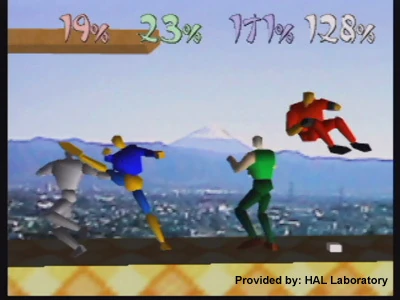
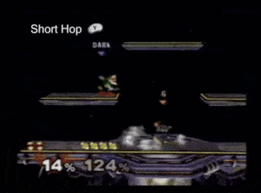
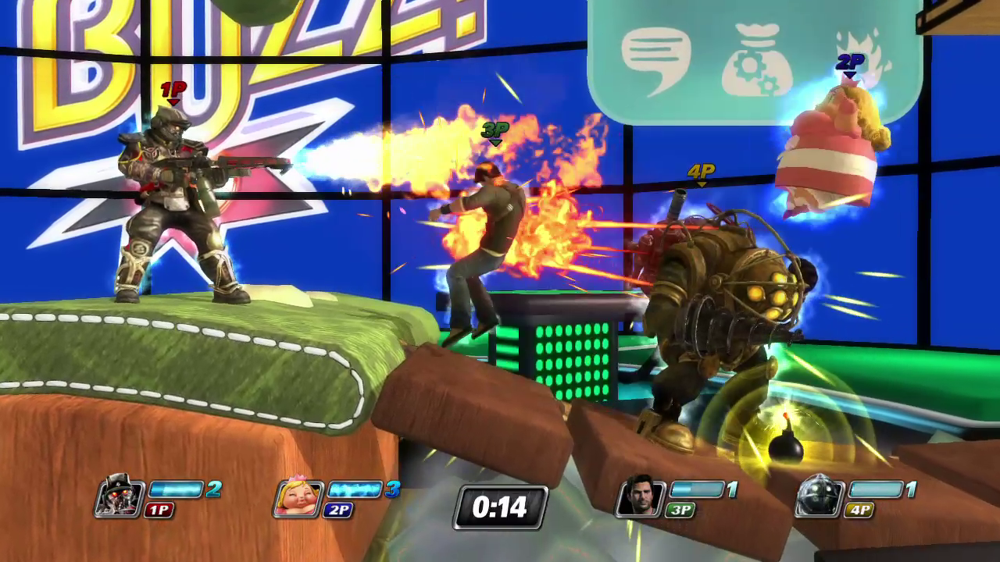
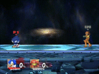
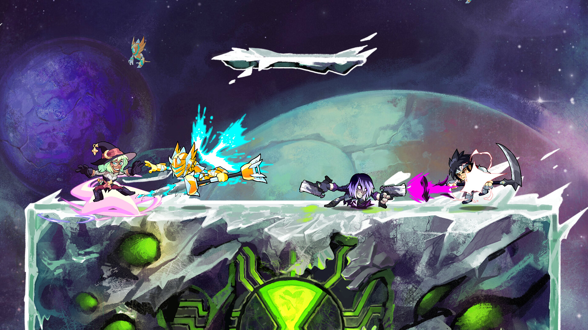
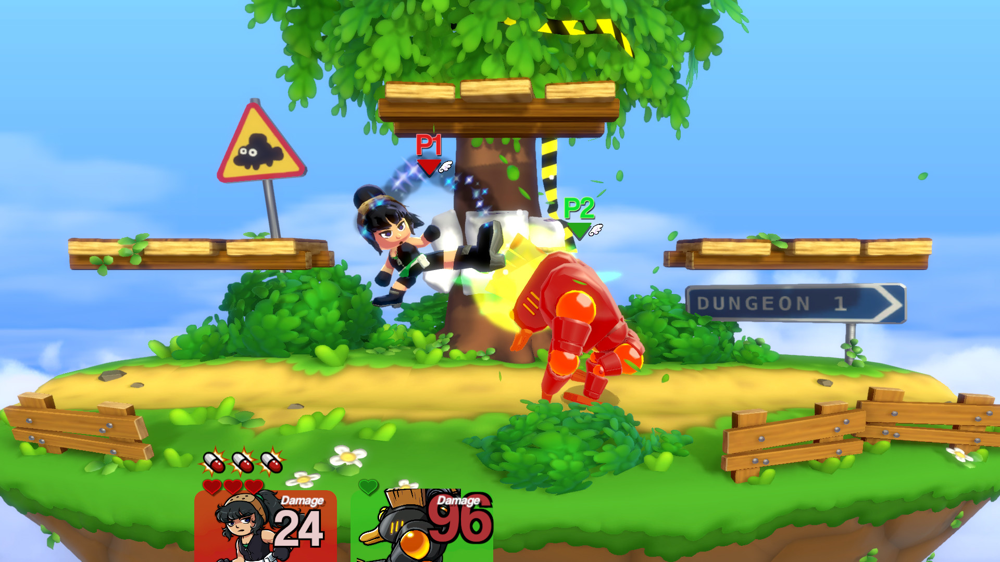
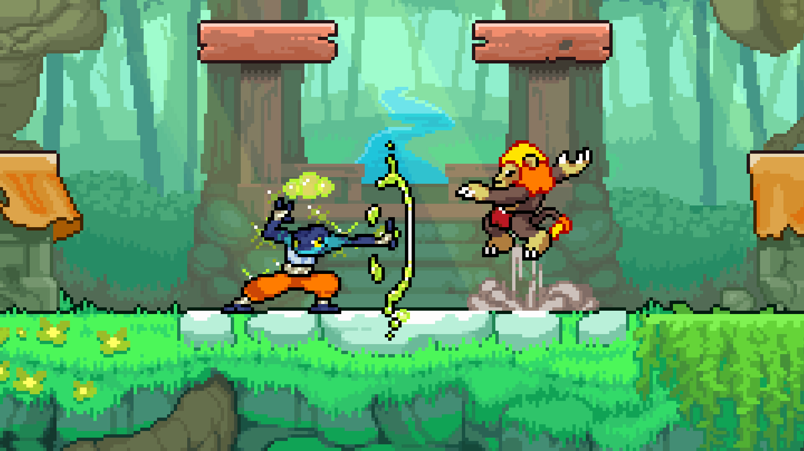

Why Did Indie Platform Fighters Emerge from the West, but not Japan?
Introduction
For my entire life, Smash Bros. has been a central reason for my interest in playing video games. The familiar Nintendo characters and wacky stages made for many hilarious moments that I share with family and friends. As I’ve grown older, I’ve become increasingly interested in the competitive side of Smash Bros. Each game in the series has a great deal of mechanical depth and detail that make improving at the games both exciting and awarding. Recently, I’ve been playing Rivals of Aether II, a platform fighting game developed by Indie developers Aether Studios, and inspired by Super Smash Bros. Playing this game, and looking at other indie platform fighters, I started to notice a pattern. None of these games were developed in Japan, the same country that Smash Bros. was developed in. Why is that?
In the rest of this page, I want to explore some reasons for why this is the case, and how we ended up here. Looking into how things turned out this way can provide some insight into how differences in culture and nations are able to lead to situations like this.
Origins of Super Smash Bros.
Masahiro Sakurai is a developer that has worked closely with Nintendo ever since Kirby’s Dreamland for the Gameboy. In addition to being a game developer, he also loves playing videogames, especially fighting games at arcades. In arcades, it’s common for fighting game cabinets to be facing opposite of each other, obscuring both you and your opponent from each other. During one of his sessions at the arcade, he unknowingly played against and thoroughly defeated a couple who just wanted some casual fun.Masahiro Sakurai's telling of the event Masahiro Sakurai felt bad about this, but it also gave him an idea for a game; a 4-player party fighting game with simplified inputs for attacks. That game would become Super Smash Bros. Super Smash Bros. released in 1999 for the Nintendo 64. This game set itself apart from traditional fighting games in several different ways. Opponents weren’t forced to always be facing each other, like in Street Fighter or Tekken. Instead, players were able to freely traverse the stage in a way that was more akin to platformers like Super Mario Bros. Rather than being a flat plane with walls on either side, Super Smash Bros. has floating stages with platforms and other geometry that take advantage of its platformer-esque controls.

Instead of depleting your opponent’s health, to win the game, you had to build up your opponent’s percentage via attacking them, adding to the amount of knockback they take when hit, in order to send them flying into the blast zones on the sides, above, and below the stage. Attacking worked differently as well. In Street Fighter, Ryu can use an attack that looks like a fireball, called the Hadoken, by combining multiple inputs, while Mario in Super Smash Bros. can throw fireballs with a single press of a button.
To add to the party game feel, Super Smash Bros. also boasted items that would randomly appear on the stage and could be picked up or interacted with by players. Adding to all of these changes on the fighting game formula, there was one major selling point that Super Smash Bros. had over most other fighting games, that being its characters. The game was actually intended to have original fighters, but during development, Nintendo wanted to use characters from their different series of games to create a crossover title that would entice more players into playing Super Smash Bros. This idea was paid off immensely, with the game becoming a huge success for the Nintendo 64. Because of this success, Masahiro Sakurai was tasked with developing a sequel to Super Smash Bros. in time for the GameCube’s release in 2001, with only 13 months to spare.

Super Smash Bros. Melee
Because of its short development time, Super Smash Bros. Melee ended up with many unintentional quirks in the game’s engine. Some of these quirks allowed players to create techniques that greatly raised the skill ceiling of the game. One of the most iconic one’s to come out of Melee is the wave dash. This technique uses one of the newly added mechanics, called an air dodge. This move allows you to dodge attacks while moving a short distance in any direction while airborne. If you dodge diagonally towards the ground immediately after a jump, you can slide along the ground, allowing you to adjust your position on the stage while keeping all of your grounded attacks available. The wave dash is a central part of Melee, especially in the game’s competitive scene, which is still going strong to this very day in the Western scene. Despite the rushed development, Melee is considered one of the best titles in the series, with the games intended and unintended mechanics working together to create a game that manages to continue engaging players despite its now aged hardware.

Emulating Success
After Melee’s release, Super Smash Bros. gained immense amounts of popularity, so much so that other corporations saw the potential in adopting the series’ gameplay with their own cast of iconic characters.
One of these games is the Japan only DreamMix TV World Fighters, published by Hudson, and released on the GameCube and PlayStation 2. Like traditional fighting games, this game has a health bar, but after its depleted and the player is knocked out, they can still interact with the other fighters. The game is a collaboration between Hudson Soft, Konami, and Takara. Because of this, the character roster is diverse, containing characters from Bomberman, Metal Gear Solid, and even Transformers.

Another game inspired by Super Smash Bros. is PlayStation All-Stars Battle Royale. Rather than using a health bar like Street Fighter or a percentage system like Smash, this game utilizes a power meter that fills up when attacking other players. Once the meter is filled up players can use a “Super Move” to knock out an opponent. Since it is a PlayStation game, many characters from games exclusive to the consoles are featured in the character roster. Some of these characters are Kratos from God of War, PaRappa from PaRappa the Rapper, and Sackboy from LittleBigPlanet.

There are several other platform fighters with licensed characters like DreamMix TV World Fighters and PlayStation All-Stars Battle Royale, but all of them have failed to reach the amount of notoriety Super Smash Bros. has. The most prominent reasons for the failure of these games are the lack of polish compared to Smash, and overly simple game design. These games struggled to capture the feeling of controlling characters that Super Smash Bros. had nailed, making these games feel clunky and unresponsive in comparison. The controls and attacks for these games also did not match the depth and complexity Super Smash Bros. had obtained. Because of this, any game inspired by Super Smash Bros. was labelled as a “Smash Clone” by the gaming community, creating a negative connotation with games that used ideas from Super Smash Bros.
Community
While other companies were creating their own games inspired by Smash, Nintendo would release the sequel to Melee; Super Smash Bros. Brawl. After seeing Melee’s competitive scene make heavy use of wave dashing, Masahiro Sakurai wanted to course correct the series to the casual form it was originally intended to be. To do this, Sakurai slowed the pace of the game by making characters slower overall and removing directional air dodges. He also added a random chance for the player’s character to trip when attempting to run. Many of Melee’s avid players disliked these changes, so much so that a group of players would create Project M, a mod of Brawl that restores many of the mechanics from Melee and speeds up the games pace. Eventually, this mod was shut down because of Nintendo, but the its existence showcased the willingness and skill of the community to make a platform fighter that fits their preferences, while retaining the polish that Super Smash Bros. is known for.

Brawlhalla is one of the first indie platform fighting games to crop up. It was first shown in 2014 by the developers Blue Mammoth Games, and eventually released as a free-to-play title in 2017. To differentiate itself from Super Smash Bros., Brawlhalla decided on not adding shields and grabs to their game. This decision sped up the pace of the game, while also making the game easier for players new to the platform fighting genre, which ended up being a large portion of the game’s players due to it being free-to-play. Brawlhalla also took a different approach to its characters. Each character has a different pair of two different weapons, which randomly appear on the stage. The characters play exactly the same when unarmed, but gain unique moves when equipped with their weapons. This approach to the game’s design gave it the opportunity to expand its character roster greatly, with 68 original characters and 88 crossover characters from movies, TV shows, and other games. Currently, there are a total of 156 characters in the game. Brawlhalla being free-to-play and responsive to its players allowed it to grow a large community of dedicated fans who still play today, showing that platform fighters could succeed without relying on established characters.

Later, in 2018, Icons: Combat Arena was released. This game was developed by some of the developers that worked on Project M, under the name of Wave Dash Games, giving fans of the mod and Super Smash Bros. Melee ample reason for excitement. Despite this, players described the game as looking uninteresting, with bland character designs and underwhelming VFX. Players also criticized the game for how heavily the characters movesets were inspired by characters in Super Smash Bros. The most appealing thing about the game was its implementation of rollback netcode, allowing online play to function significantly better than in the Super Smash Bros. series, which is notorious for having laggy online play. Ultimately, the game failed to find its footing and grow a community because of its unappealing characters and lack of originality.
Slap City was another indie platformer, released in 2020 by Ludosity, as a crossover title using characters from the studio’s past games. This game was praised for its wacky art style and silly cast of characters, making the game stand out compared to Super Smash Bros., and other fighting games in general. Like many other Western indie platform fighters, the gameplay was inspired by Super Smash Bros. Melee, with mechanics like wave dashing making an appearance. In addition to being a game for competitive players, Slap City has its own story mode with platforming levels, as well as other miscellaneous features for players to engage with outside of regular battles.

One of the most successful indie platform fighters is Rivals of Aether, releasing in 2017 from Aether Studios and spearheaded by Dan Fornace. Rivals of Aether takes elements from Melee, while opting to do away with shields and grabs, similar to Brawlhalla, while using a unique pixel art style. The characters in this game are original, based on the elements of fire, air, water, and earth, although guest characters from other indie games also made appearances as well. The design of the characters’ movesets are more complicated than that of Super Smash Bros. and most other platform fighters, with each characters’ moves revolving around different ways to control the stage. The developers also supported modding, making it easier to create your own character for the game. This resulted in a strong community of players and creators. Because of this community, Aether Studios was able to branch out and make spin-off games based on their characters from Rivals of Aether, turning the game into a franchise. Rivals of Aether showed how a community centered approach to development that is emblematic of Western competitive gaming culture, could allow an indie platform fighter to thrive.

Eventually, the sequel to Rivals of Aether would release in 2024, Rivals of Aether II. This game brings the characters and gameplay from its predecessor into 3D. During this transition, shields and grabs were added to the game, with the unique additions of special pummels, and special ledge getup attacks. The presence of shields and grabs made Rivals of Aether II feel too reminiscent of Super Smash Bros., with players of the original Rivals of Aether and Super Smash Bros. being divided by the sequel.
These indie games show that there is a demand for more games like Super Smash Bros. that expand on the series’ formula, without relying on marketing through characters like the bigger licensed games. Without the luxury of popular characters and IP as a selling point, these games focused on providing a unique experience while respecting their inspiration, in order to make games that players would actually want to play.
Nearly all major indie platform fighters came from Western developers and communities… So where’s Japan in all of this?
Where’s Japan?
In Japan, independent game development exists in two forms; doujin, and indie. While “indie” generally refers to independently developed games in the same vein as Western indie games, doujin has more emphasis on being self-published and being created as a hobby rather than a means to make a living. Doujin works are often sold by their creators at conventions like Comiket.Vogel 24 Historically, doujin developers mostly focused on single player rather than multiplayer, with genres such as visual novels, RPGs (often made in RPG Maker), and bullet hell shooters. Because of this past, the independent development scene in Japan evolved differently than in the Western scene that has the environment for platform fighters that allows them to thrive. Rather than making competitive games, doujin games largely focused on smaller, self-contained games with unique premises and genres, leaving the mainstream industry in Japan to create more competitive games.Helland 42
Unlike the rest of the world, Japan’s Super Smash Bros. competitive scene functioned significantly differently. In the West, many players stuck with Melee, keeping it alive through mods like Slippi, a mod that allows for online with rollback netcode, while players in Japan moved on to the sequels as they released. In Japan, modifying games is illegal in most cases and is also considered taboo culturally, so players had less of a reason to stick with Melee. Additionally, while rollback netcode has been extremely impactful for online play in the West, especially with countries like the United States, it is not a big deal in a country the size of Japan, where Nintendo’s traditional online works well due to the nation’s small size. Because of mods being illegal and taboo in Japan, Japanese players never had the chance to experiment with the series like players in the West had with Brawl and Project M. This, paired with the preference for indie developers in Japan to develop single player experiences, play a large part in the reason for why there aren’t any indie platform fighters from Japan.
Ultimately, the lack of Japanese indie platform fighters was not caused by a lack of interest or creativity. Instead, it was the differences in how independent game development and competitive communities evolved in Japan and in the West. While Western platform fighters emerged from a community and culture that encouraged the preservation and modification of video games, Japan’s doujin culture preferred smaller and more self-contained experiences that distanced itself from mainstream industry trends.
This reflects something we have observed in a historical context. Even when nations or cultures begin from a similar foundation, a small difference in culture, geography, or law, can lead to an entirely different direction. Similar to how the countries that became independent during the Atlantic Revolutions developed distinct identities despite all sharing similar revolutionary ideals, the gaming communities surrounding Super Smash Bros. in Japan and the West evolved differently despite originating from the same series of games.